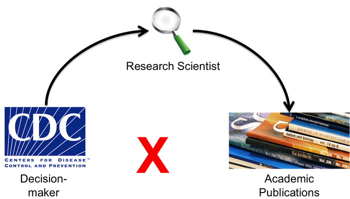

PLoM.io
Public Library of Models
Created by Sebastien Ballesteros, Tiffany Bogich and Joseph Dureau
Scientific journals (1665)

- Invented to allow fast delivery of science (printing press was the right medium, but books were too slow).
- Provide a norm ensuring reproducibility of results.
- Synchronizes the argument across the community of natural scientists.
For modeling papers, Scientific journals' foundational goals are no longer fulfilled
Scientific communication relies on evidence that cannot be entirely included in publications, but the rise of computational science has added a new layer of inaccessibility [...]. The vagaries of hardware, software and natural language will always ensure that exact reproducibility remains uncertain.Nature 482, 485–488 (23 February 2012)
- Reproducibility: Lack of source code, lack of formal grammar for model definition, build and runtime issues.
- Fast: Reimplementing from scratch is time consuming and keeps models from spreading and being used.
- Social: Models are not shared.
Exponentially Increasing number of modeling papers published

(PLoS journals and epidemiological models only)
Modeling work is the cornerstone of modern decision making processes
- Swine flu: distribution of tamiflu for treatment and outbreak control.
- HIV: treatment regimes to maximize patient lifespan and minimize transmission.
- Foot and Mouth Disease: livestock culling strategy to minimize outbreak spread.
Communication gap between funding and policy

The solution: PLoM.io
- A trusted Public Library of Models.
- Models as tangible objects with DOIs.
- Models ready to be simulated (on the cloud) from any connected device.
Made possible by leveraging new technological and scientific developments
- The ubiquity and low cost of scalable cloud computing.
- HTML5 technologies allowing real time interactions with models running on the cloud from any device.
- The recent development of statistical plug and play methods making generic inference possible for arbitrary complex models.
Modeling made social
- Models can now be shared and forked.
- Curate a community of modelers, data providers and decision makers having access to a real time representation of the dynamic of research.
Plom.io Business Model
Publication fees
Open access model.
Guarantee of full reproducibility.
Models are available from any connected device.
Industry standard: PLoS Journals $2900/publication.
Platform as a service
Provide integrated modeling tools to institutions lacking hardware facilities.
Leverage our cloud computing platform for maximal cost efficacy.
News industry
Provide data-vizualization through embeddable HTML5 widgets whose states can be shared.
Citizens can share the result of their exploration of science-backed simulation tools.
Get involved
https://github.com/plomThank you!